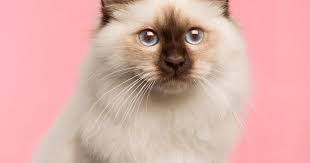
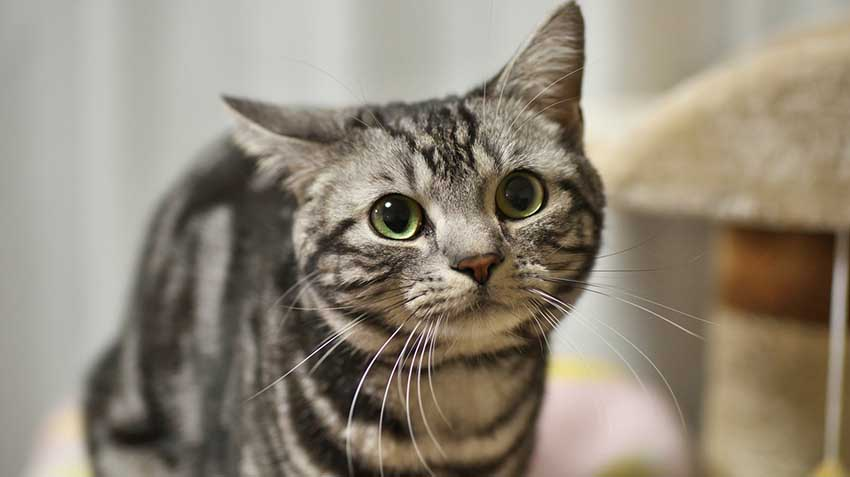

Cats can improve your well-being by providing companionship and reducing loneliness, not to mention giving us a reason to laugh at their playful antics when they have had catnip. They can also help reduce stress and anxiety, which is especially important for people who live alone.
Cats Can Be Our Best Friends
Cats Like Their Space, But That Doesn't Mean They Don't Love You


Ragdolls and Birman cats are known for their friendly and affectionate nature, making them great companions for new cat owners. Interacting with animals has been shown to decrease levels of cortisol (a stress-related hormone) and lower blood pressure. Cats can make us feel good and connected since they are more open and curious, and it builds up our capacity for kindness and generosity toward others. Even if they also tend to be independent and introverted, they still form strong bonds with their companions.
Some facts about them ↓
- Enjoys playing games
- Requires grooming every day
- Sociable and dependent cat


- Easygoing
- Curious
- Enjoys socializing
🐾 American Short hair cats are independent like most cats and can be easy-going. Their short fur is also easy to brush and maintain. Click on the photo for more pictures of short hair cats!🐾
Why Cats?
Companionship. Having a cat companion gives you a chance to bond and forge a relationship with another being. This can be especially important for people who live alone and experience anxiety.
As Well as
Increased socialization. For some people, socialization can be a stressful experience, leading to an increase in blood pressure and heart rate. They may expect to be judged by others. With cats, however, people can talk freely, without fearing what other people might think.
Listen to relaxing rain before you keep reading!
Here is a website to checkout for more types of cat breeds for you first-time cat owners.
| Cat Breeds | Lifespan | Colors |
|---|---|---|
| American Shorthair | 15 to 20 Years | White, black, blue, red, cream and silver, etc. |
| Ragdoll | 12 to 17 Years | Blue, red, cream, and chocolate |
| Scottish Fold | 11 to 15 Years | Variety of colours and patterns |
| Birman | 12 to 16 years | 20 different colors, including blue and lilac |
| Domestic Shorthair | 12 to 20 Years | Brown, tan, white, black, red, orange, etc. |
Which cat do you like the most so far?:
Do you have any knowledge or experience with cats? Whether a little or a lot?:
Sources